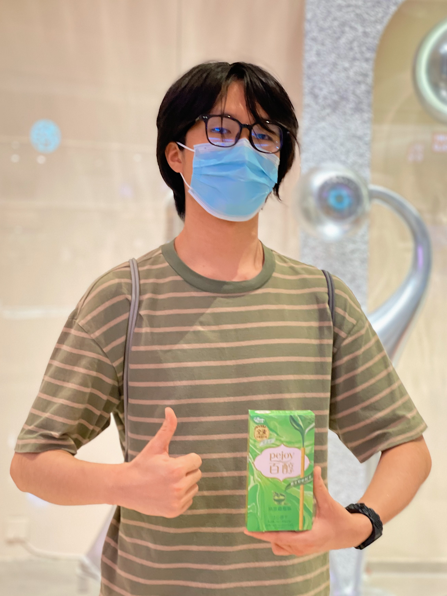
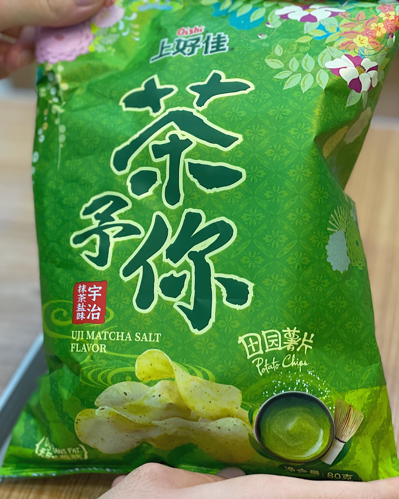
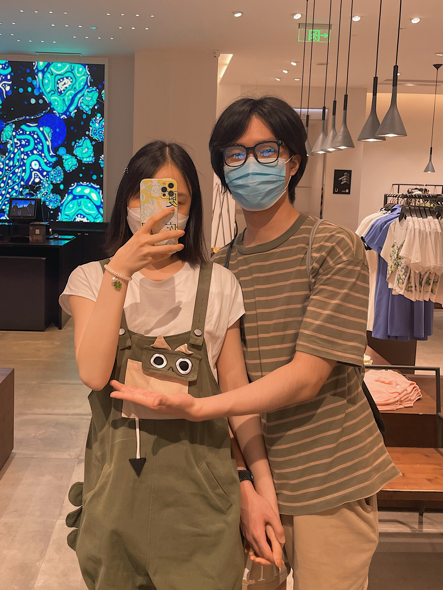
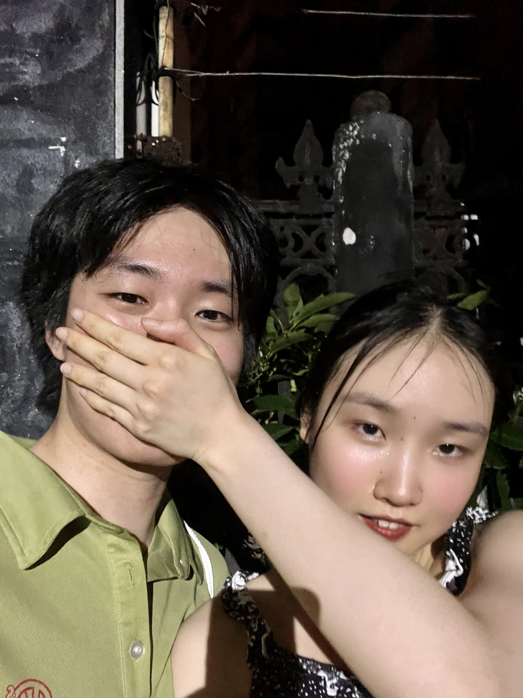

Moon and Dust Wikipedia
这是属于 Moon and Dust 的维基百科
你知道“绿绿抹茶龙”吗？
2022-08-12
绿绿抹茶龙是什么呢？绿绿抹茶龙相信大家都很熟悉，但是喜欢抹茶的绿绿抹茶龙是怎么回事呢，下面就让小编带大家一起了解吧！
原来，“绿绿抹茶龙”属于茶龙科的抹茶龙属，为该属下的唯一一种，于2022年由中国古生物学家陈某月描述命名。所以，绿绿抹茶龙又名“陈氏抹茶龙”。
绿绿抹茶龙以一身抹茶色及喜爱抹茶而得名。绿绿抹茶龙的长相非常可爱，拥有大大的眼睛和三角形的耳朵，一条约为30cm长的小尾巴，以及6片类似于鳄鱼骨刺的凸起物。不过绿绿抹茶龙坚称自己不是鳄鱼是恐龙，所以科学家推断，绿绿抹茶龙曾经与剑龙有非同一般的亲缘关系。
现在的主流观点认为，绿绿抹茶龙广泛分布于世界上盛产抹茶的地区。图片中所展示的绿绿抹茶龙，就是发现于上海市置汇旭辉遗迹附近。根据古生物学家的初步调查，置汇旭辉遗迹大量产出抹茶冰激凌、抹茶蛋糕、抹茶奶茶、抹茶夹心饼干棒、抹茶薯片、抹茶糖果、抹茶摩卡等等，为绿绿抹茶龙的成长提供了优渥的条件。同时也有研究指出，绿绿抹茶龙在缺少抹茶的情况下，会食用抹茶味的小朋友。关于绿绿抹茶龙是食肉恐龙还是食草恐龙的争论，仍在激烈进行中。
值得注意的是，本次发现的绿绿抹茶龙是人类有史以来发现第一只活恐龙，其已具备与人正常交流的能力。相比于其他恐龙而言，绿绿抹茶龙的身手更为矫健，且存活寿命更长。科学家认为，其喜食抹茶的特点是使其躲过6500万年前那次陨石大撞击的关键因素。绿绿抹茶龙的首次发现便轰动了整个世界，在短短数小时之内便登上了许多国家的头条。在一片呼声之中，一名王姓的恐龙饲养员宣布自己将抚养这只可爱的小恐龙，相信绿绿抹茶龙会过上最幸福的生活。
据传言，环球影业正在推动“绿绿抹茶龙”成为《侏罗纪世界4》的新主角。这一传闻让全球的恐龙迷兴奋不已，那就让我们拭目以待吧。
世界抹茶组织（WMO）宣布，将每一年的8月11日定为“世界抹茶日”，以此来庆祝绿绿抹茶龙在人类世界的诞生。所以，让我们一起吃抹茶冰激凌吧，向绿绿抹茶龙致以最真诚的祝福！
她为什么是小兔子？
2023-07-07
因为她小小的嘴巴下面藏了两颗乖巧的兔牙，每次她感到开心/好奇/震惊的时候就会露出来。每次看到她，我都会想到一只可爱的小兔子，忍不住想要抚摸她的耳朵。
因为她很喜欢吃蔬菜。每次吃饭她都要先吃两口蔬菜，众所周知，兔兔就是每天都要吃很多蔬菜的。
因为她非常怕热。据说养兔子的适宜温度是5-25摄氏度，而据我观察她在这个温度下也是最活泼的。一旦到了夏天她就会变成可怜的热兔。
最重要的是，兔子是可爱、善良、温柔、活泼的动物。这正符合她的形象！她的笑容温暖如阳光，她的善良闪烁着光辉，她的温柔如同春风拂面，她的活泼犹如小兔般轻盈。
你知道的，我最喜欢小兔子了😎
什么是贴贴？
2023-07-08
众所周知，“贴贴”就是指两个人在物理上贴在一起。我认为，两个人仅仅牵着手是不够的。因为大街上的所有情侣都会牵着手，这样并不能显得我们很要好！所以我要把我的手搭在她的肩膀上，搂得紧紧的，用我的脸蛋贴贴她的脸蛋，最后还要在大庭广众之下亲她两口。
我之所以喜欢贴贴，是因为她之前一直给我发贴贴的表情包，于是我就好奇贴贴是什么感觉。随后每次见到她我都要不厌其烦地靠近她，把身体贴在一起。嗯，物理贴贴果然比赛博贴贴更能体会到对方的存在。
贴贴和抱抱是不一样的。抱抱是一种动作，而贴贴是一种状态。拥抱时候是全心全意的，而贴贴的时候可以散步、刷水源社区、喝酸奶...
也许大街上的别人会觉得我们很像连体婴儿，不过我不在乎，毕竟贴到美女真的很爽耶😆
哈根达斯的抹茶冰激凌

抹茶奶绿波霸脏脏茶
饲养员在诱捕绿绿抹茶龙
居然有抹茶薯片
绿绿抹茶龙（左一）和饲养员的合影
和热兔贴贴
评论区